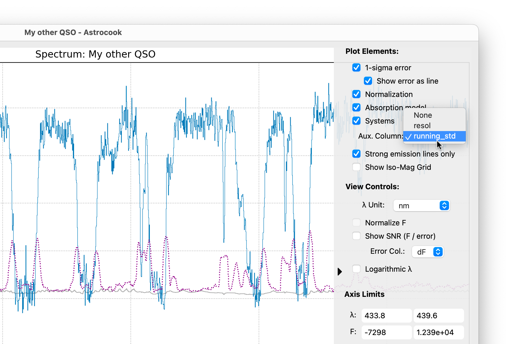
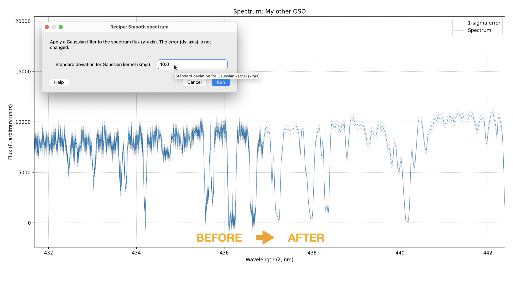

Flux Operations#
Once you’ve loaded your data and set the basic properties, you might need to process the flux arrays to increase signal-to-noise ratio (SNR) or prepare for multi-spectrum analysis. This tutorial covers the Flux menu operations.
1. Calculating Running Statistics#
Sometimes you need to estimate the noise level directly from the data itself (e.g., if the error column is missing or unreliable).
Go to Flux > Calculate Running StdDev….
Input Column: Usually
F(Flux).Window Size: The number of pixels to use for the sliding window (e.g.,
21).Output Column: Name for the new error column (default:
running_std).
This creates a new auxiliary column containing the local Root-Mean-Square (RMS) variations, which you can then visualize or use as a mask.

2. Smoothing#
Smoothing is the simplest way to visualize faint features by reducing high-frequency noise. Astrocook uses a Gaussian kernel for this operation.
Go to Flux > Smooth Spectrum….
Sigma (km/s): Enter the width of the Gaussian kernel.
A value of
100km/s is often a good starting point for visualization.Smaller values (e.g.,
10-30km/s) preserve narrow absorption lines.
Click Run.
The operation creates a new session state with the smoothed flux. The original data is preserved in the history (undo with Ctrl+Z / Cmd+Z). Note that the error array (dy) is also smoothed to maintain consistency.

3. Rebinning#
Rebinning is more rigorous than smoothing. It combines adjacent pixels into larger bins, conserving the total flux (integrated flux). This is essential when you want to improve SNR for quantitative measurements or reduce the data size.
Go to Flux > Rebin Spectrum….
Step Size (dx): Enter the desired size of the new bins.
Unit: Choose the unit for
dx(e.g.,km/sornm).Wavelength Range (Optional): You can define a specific start (
xstart) and end (xend) wavelength. Leaving them as None will use the full existing range.Click Run.
Note
Unlike smoothing, rebinning changes the X-axis grid. The new flux values are calculated to preserve the physical energy/counts per bin.
4. Equalizing#
Sometimes the flux calibration between two exposures or arms of a spectrograph differs. You can scale the current session’s flux to match a reference session.
Go to Flux > Equalize to Reference….
Reference Session: Select the session you want to match.
Order: Choose the complexity of the scaling:
0(Scalar): Multiplies flux by a constant factor.-1(Spline): Fits a smooth curve to match the shape.1or higher: Fits a polynomial of that order.
5. Resampling#
Resampling is different from rebinning. It interpolates your spectrum onto an arbitrary grid defined by another open session. This is a critical prerequisite for comparing two spectra pixel-by-pixel (e.g., for creating a ratio or difference spectrum).
Scenario: You have a high-resolution spectrum (Session A) and a low-resolution standard (Session B), and you want to divide A by B.
Load both sessions.
Select Session A (the one you want to change).
Go to Flux > Resample on Grid….
Target Session: Select “Session B” from the dropdown list.
Click Run.
Session A will now have exactly the same wavelength points as Session B, allowing you to use Apply Expression to compute F / SessionB.F.
6. Flux Calibration#
If your spectrum is not flux-calibrated (or the calibration is off), you can warp it to match known photometric data.
Go to Flux > Flux Calibrate….
Magnitudes: Enter a comma-separated list of
Filter=Magnitudepairs.Example:
SDSS_g=19.2, SDSS_r=18.8Supported filters include standard optical systems (SDSS, Johnson, etc.).
Click Run.
Astrocook calculates a smooth correction curve to force the synthetic photometry of your spectrum to match the input magnitudes.
Tip
After calibration, check the Show Iso-Mag Grid box in the Plot Controls to verify the result against reference magnitude curves.